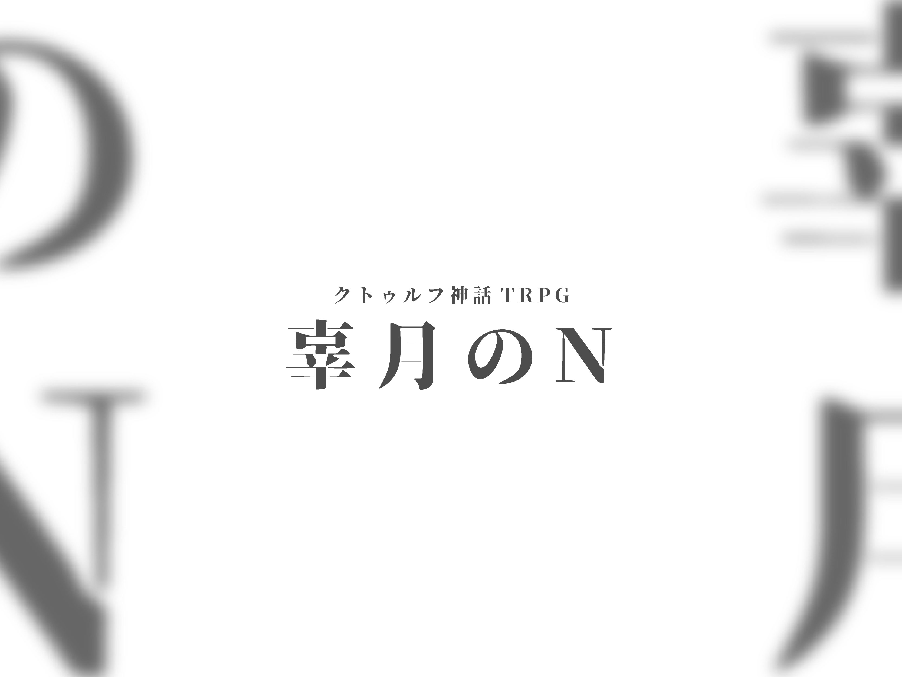
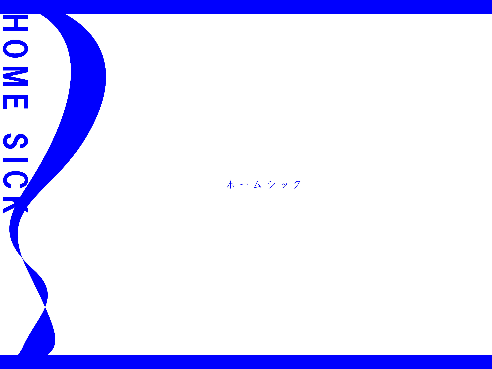
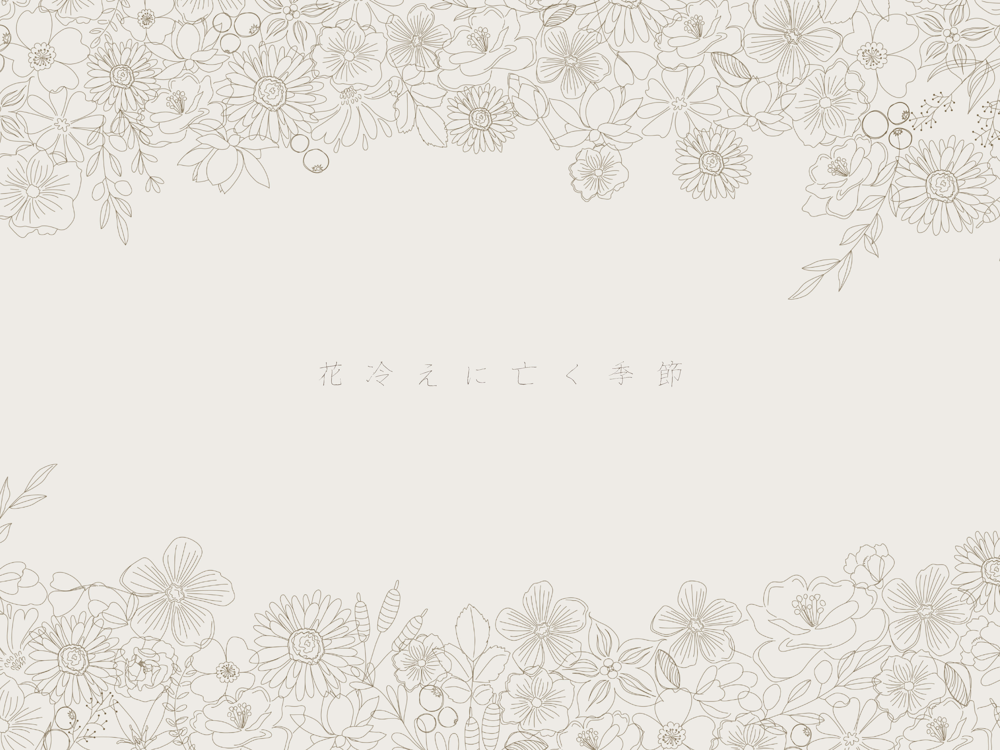
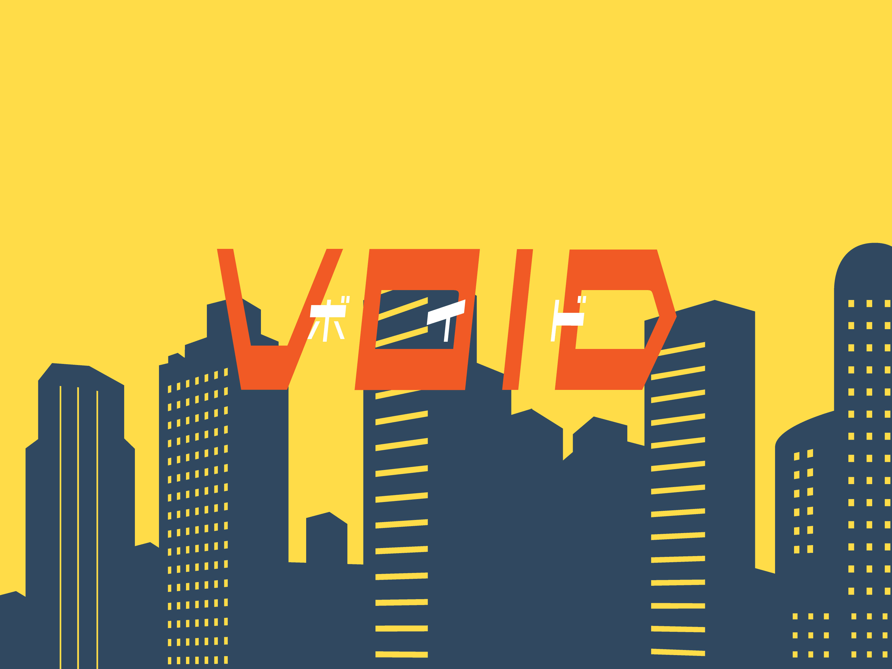
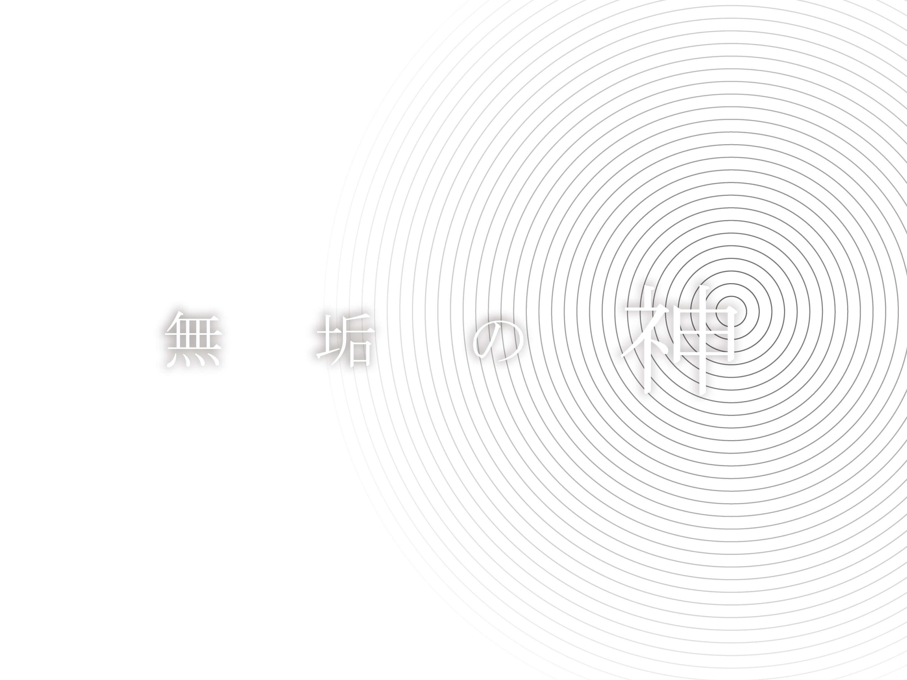
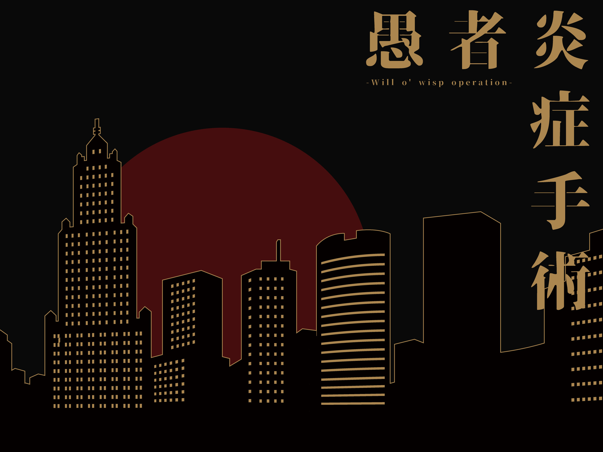

- トップ >
- おすすめシナリオ
おすすめシナリオ
最近のおすすめシナリオを6つセレクト
辜月のN

一本の、とある教授からの電話によって――。
ホームシック

「私の名前はfather（ファザー）」
「君を誘拐させてもらった。
これから少しの間、私と家族になってほしい。」
花冷えに亡く季節

君は病の療養の為、サナトリウム《アヴリル》に預けられることになる。
そこに集うのは、奇病を秘めた少年少女たちであった。
VOID

それから20年後の2050年 2つの事件が世間を騒がしていた。
アンドロイドによる連続殺人事件
アンドロイドの連続破壊事件
警視庁はこの2つの事件を終息させる為新たに 公安局刑事課アンドロイド事件捜査係を設立したのだった。
無垢の神

その血を動く巡る、超常現象があった。
それは虚空神話という研究施設から脱走した、とある少女＿冰鞠。
その身に絶大な可能性を宿しながら、ただの純粋無垢の14歳である。母親と暮らし、平穏な日常を望み、身の回りの小さな幸せに頬を緩めるだろう。
だが、そんな願いは、彼女を求める多くの人間によって打ち砕かれる。それは虚空神話や一式若葉だろうが、歩いは想定外の敵が来るだろうか。
もしかしてそれは＿探索者自身かもしれない。
貴方の取る行動は、貴方の持つ目的は、それが如何なるものであろうが構わない。
このシナリオの圧倒的な自由性を元に、それは許されるだろう。
愚者炎症手術 -Will o' wisp operation-

合言葉は「ドロッセルマイヤー」
日常でその言葉を聞いたら、作戦開始だ。